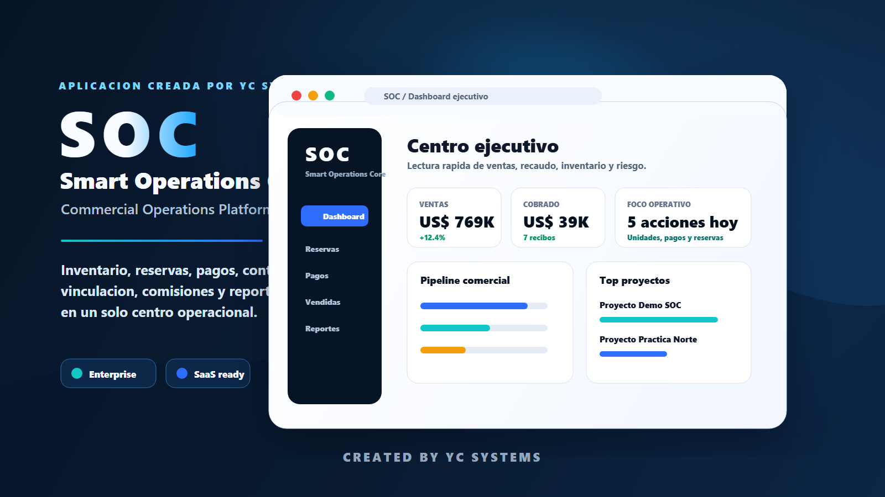

YC Systems / Sistemas operativos
Operaciones comerciales
SOC
Un centro de mando para flujos comerciales, reservas, ventas de constructoras, analítica y seguimiento operativo.

Producto propio
Un producto para convertir ventas dispersas en una operación visible
SOC existe para equipos comerciales que necesitan tomar decisiones con datos, no con capturas de WhatsApp o reportes que llegan tarde.
Qué resuelve
Centraliza reservas, disponibilidad, actividad comercial y etapas operativas para que gerencia vea el estado real del negocio.
Qué incluye
Dashboard ejecutivo, métricas, seguimiento, pantallas por área, flujo comercial y base para reportes.
Quién lo compra
Constructoras, equipos de ventas, gerentes comerciales y negocios que necesitan visibilidad diaria.
Siguiente fase
Roles, integraciones, reportes avanzados, notificaciones, exportación y mantenimiento mensual.
Un cliente similar puede contratar un dashboard operativo basado en SOC.
Quiero un dashboard como este